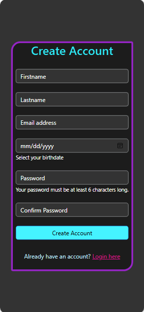
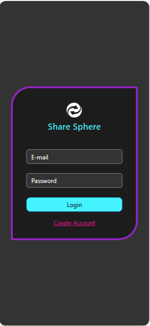
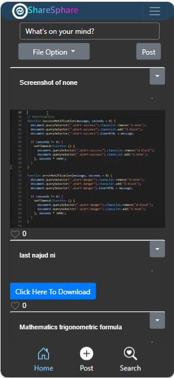

Project Portfolio
Web Development
ShareSphere
Description: Developed a mobile application centered around the social media genre, offering a fresh perspective on how social media should appear on mobile devices.
Overview: Designed to be user-friendly, with consideration for ease of use by individuals of all ages, including elders.
Technologies Used: HTML, CSS, JavaScript, Bootstrap, Capacitor, Supabase, PostgreSQL


